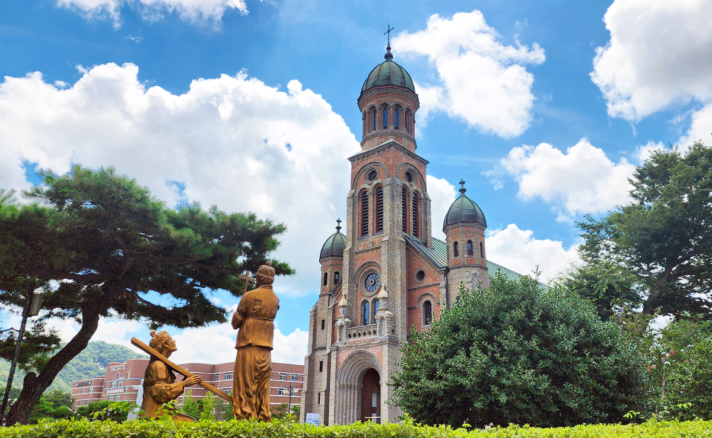
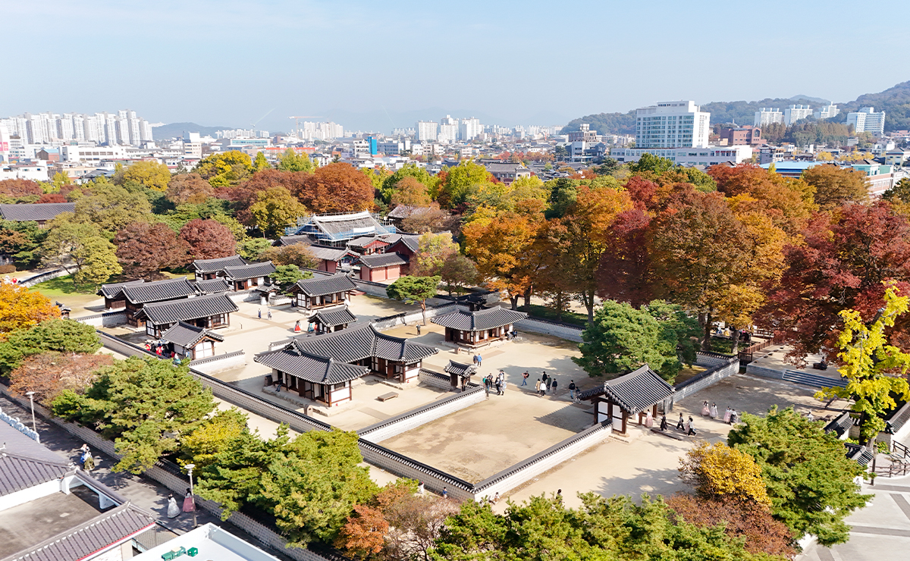
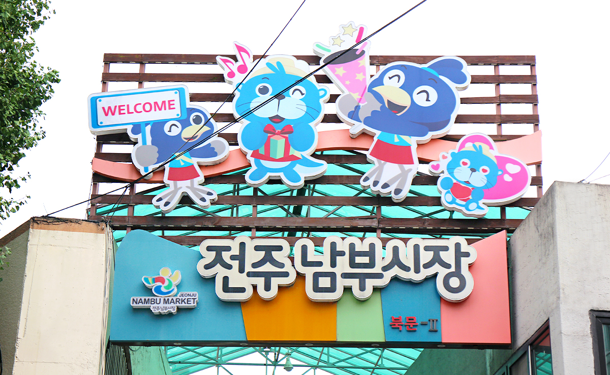
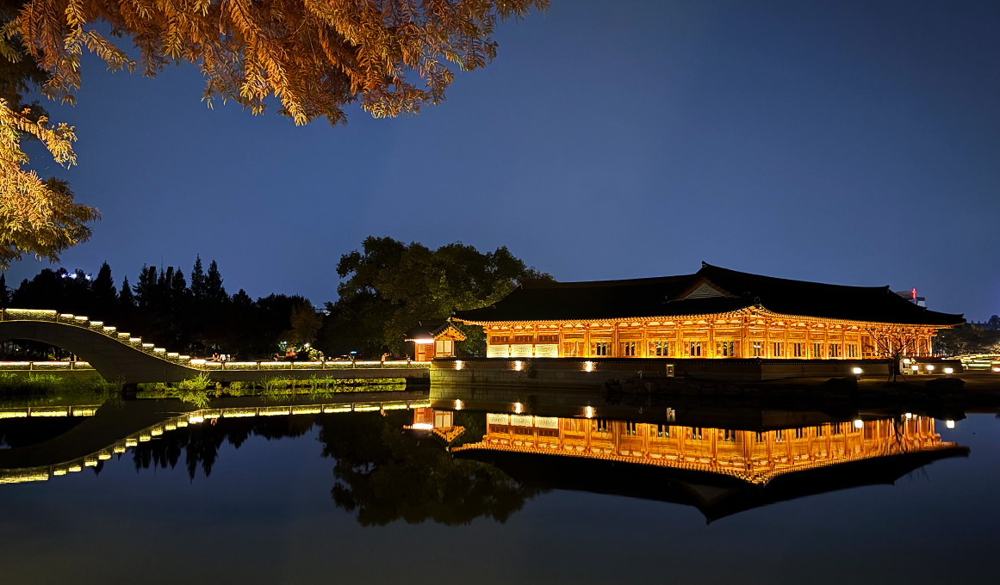

전주한옥마을은 조선왕조의 발상지 전주의 역사적 맥락 속에서 형성된, 국내 최대 규모의
한옥 밀집 지역이다.
20세기 초 근대 건축물이 들어서던 시기에도 주민들은 한옥의 삶을 고집했고, 그 결과
오늘날 700여 채에 달하는 대규모 한옥군이 도심 한가운데 온전히 보존되어 있다.
태조 이성계의 뿌리가 깃든 경기전, 천년 고을의 골목 구조, 전통과 생활이 맞닿은 마을 문화는 한국의
정체성을 가장 온전히 보여주는 공간으로 평가된다.
기와지붕의 선과 골목의 결, 담장의 숨결이 자연스럽게 이어지며, 전주한옥마을은
한옥이 “전시물”이 아닌 실제 삶으로 이어져 온 드문 사례이자, 한국 전통경관을 대표하는
상징적 장소다.
전주의 이야기를 걷고, 보고, 맛보는 살아 있는 전통문화 여행지
한옥마을은 문화유산과 일상을 동시에 경험할 수 있는 공간이다.
경기전·전동성당·오목대 등 역사 명소들은 각각의 스토리를 품고 있으며, 골목을 걷는 것만으로도
시간이 천천히 흐르는 듯한 전주의 고유한 분위기가 전해진다. 한복 체험, 다도 체험, 전통 공예 공방,
작은 박물관과 갤러리 등은 여행자가 직접 문화를 배우고 즐길 수 있도록 마을 곳곳에 자리한다.
카페와 공예점, 생활 한옥 속에서 머무는 순간들도 전통의 연속성을 만들어낸다.
전주는 미식의 도시답게 먹거리 또한 풍성하다. 전통 한정식, 떡갈비 정식, 콩나물국밥, 각종 길거리 간식은
마을을 찾는 이들의 발길을 머물게 한다. 낮에는 한옥의 기와 위로 햇살이 내려앉고,
저녁이면 은은한 조명이 골목을 감싸며 전혀 다른 운치를 선사한다.
전주한옥마을은 ‘머무는 순간이 전통이 되는 곳’, 역사·문화·미식이 한 공간에 어우러지는
전주의 정체성을 대표하는 대한민국 최고의 관광지이다.
교통
주변관광
맛집
숙박

전동성당
기본주소
전북 전주시 완산구 태조로 51 (전동 200-1)
전화번호
063-284-3222, 286-3222
천년 왕도의 품에서 살아온 한국 최대의 한옥 군락지
전주한옥마을은 조선왕조의 발상지 전주의 역사적 맥락 속에서 형성된, 국내 최대 규모의
한옥 밀집 지역이다.
20세기 초 근대 건축물이 들어서던 시기에도 주민들은 한옥의 삶을 고집했고, 그 결과
오늘날 700여 채에 달하는 대규모 한옥군이 도심 한가운데 온전히 보존되어 있다.
태조 이성계의 뿌리가 깃든 경기전, 천년 고을의 골목 구조, 전통과 생활이 맞닿은 마을 문화는 한국의
정체성을 가장 온전히 보여주는 공간으로 평가된다.
기와지붕의 선과 골목의 결, 담장의 숨결이 자연스럽게 이어지며, 전주한옥마을은
한옥이 “전시물”이 아닌 실제 삶으로 이어져 온 드문 사례이자, 한국 전통경관을 대표하는
상징적 장소다.
전주의 이야기를 걷고, 보고, 맛보는 살아 있는 전통문화 여행지
한옥마을은 문화유산과 일상을 동시에 경험할 수 있는 공간이다.
경기전·전동성당·오목대 등 역사 명소들은 각각의 스토리를 품고 있으며, 골목을 걷는 것만으로도
시간이 천천히 흐르는 듯한 전주의 고유한 분위기가 전해진다. 한복 체험, 다도 체험, 전통 공예 공방,
작은 박물관과 갤러리 등은 여행자가 직접 문화를 배우고 즐길 수 있도록 마을 곳곳에 자리한다.
카페와 공예점, 생활 한옥 속에서 머무는 순간들도 전통의 연속성을 만들어낸다.
전주는 미식의 도시답게 먹거리 또한 풍성하다. 전통 한정식, 떡갈비 정식, 콩나물국밥, 각종 길거리 간식은
마을을 찾는 이들의 발길을 머물게 한다. 낮에는 한옥의 기와 위로 햇살이 내려앉고,
저녁이면 은은한 조명이 골목을 감싸며 전혀 다른 운치를 선사한다.
전주한옥마을은 ‘머무는 순간이 전통이 되는 곳’, 역사·문화·미식이 한 공간에 어우러지는
전주의 정체성을 대표하는 대한민국 최고의 관광지이다.
교통
주변관광
맛집
숙박

경기전
주소
전주시 완산구 태조로 44
연락처
063-281-2788
태조 이성계의 어진을 봉안하고 제사하는 전각, 경기전
1410년(태종 11)에 임금은 전주, 경주, 평양에 태조 이성계의 어진을 봉안하고 제사하는 전각을 짓고 어용전(御容殿)이라 하였다. 조선 왕조의 발상지라 여기는 전주에 건립한 태조 진전으로 경기전이라는 명칭은 세종 때 붙인 이름이다.
건물은 정유재란 때 소실되었던 것을 1614년(광해군 6)에 중건하였다. 경기전의 경역은 정전(正殿)과 조경묘(肇慶廟)로 나뉜다. 경기전은 중앙에 태조어진을 모신 정전이 있고, 동쪽으로는 조선왕조실록을 보관하던 전주사고가 있으며
서쪽으로는 태조어진을 수호하고 제사를 지냈던 부속 건물들이 있다. 또한 북쪽으로는 조선 왕실의 시조 사당 조경묘가 있으며 그 옆으로 태조어진의 역사를 담은 어진박물관이 있다.
조선 역사의 숨결을 고스란히 간직하고 있는 곳
경기전은 전주한옥마을에 방문했다면 꼭 들러야 할 곳 중 하나다. 드라마 촬영 명소로도 유명한 대나무숲, 고풍스러운 돌담길, 세월의 흔적을 간직한 소나무 숲과 매화나무는 고즈넉한 한옥들과 어우러져 아름다운 풍경을 선보이고 홍살문을 지나 정전으로
향하는 길에 보이는 풍경은 경건하기까지 하다. 태조 이성계의 어진을 봉안하고 조선 역사의 숨결을 고스란히 간직한 전주 대표 역사 명소답게 경기전은 해마다 다양한 역사 연계 문화행사로도 볼거리가 많은 곳이다.
특히 관람시간이 제한된 경기전에서 밤 풍경을 감상하며 단막극을 통해 문화유산 속 역사해설을 재미있게 알아보는 ‘왕과의 산책’은 조선의 왕과 함께하는 특별한 역사탐방 프로그램으로 마치 조선으로 시간여행을 떠나온 듯한 경험을 해볼 수 있다.
교통
주변관광
맛집
숙박

남부시장
주소
전주시 완산구 풍남문1길 19-3
연락처
063-284-1344
세월이 머문, 전주 장터의 오래된 풍경
전주 남부시장은 1905년 문을 연 전주의 대표 전통시장이다. 오랜 세월을 지나며 수많은 상인과 주민의 생활이 녹아든 곳으로, 골목마다 정겨운 인사와 상점 불빛이 시장의 하루를 채운다. 건어물과 야채, 생활잡화, 전주 특산품까지 다양한 물건이 늘어서 있어 전주 사람들의 삶과 장터의 리듬을 자연스럽게 느낄 수 있다. 도시가 변해도 남부시장은 하루의 순간과 사람이 오가는 소리를 그대로 품고 있어, 여행자들에게 전주의 ‘살아 있는 풍경’을 보여주는 곳이다.
단순한 쇼핑 공간이 아니라 전주의 삶과 시간이 흐르는 장소이며, 오래된 골목 속에서 도시의 진짜 매력을 만나는 자리다.
시장 지붕 위에 자리한 청년들의 작은 거리
남부시장 2층에 자리한 청년몰은 청년 창업가들이 모여 만든 독립적인 상점 거리다. 공방, 카페, 소규모 디저트 가게 등 개성 있는 작은 공간들이 골목처럼 이어져 있어 시장 아래의 분위기와는 또 다른 매력을 준다.
규모는 작지만 따뜻한 감성이 살아 있는 공간이다. 소박한 간판과 목재 문턱, 창작자의 손길이 담긴 제품들이 골목 분위기와 자연스럽게 어울린다. 낮에는 조용히 둘러보기 좋고, 저녁이면 가게에서 새어 나오는 불빛이 시장 위층을 아늑한 동네처럼 만든다. 청년몰은 전주의 오래된 시장이 가진 매력을 해치지 않고, 그 위에 새로운 이야기를 더하는 ‘청년 감성의 작은 마을’이다.
교통
주변관광
맛집
숙박

덕진공원
주소
전주시 덕진구 권삼득로 390-1
연락처
063-281-8661
세대별 추억이 공존하는 도시공원 덕진공원
전주 시내 중심에 위치한 덕진공원은 전주 시민들에게 있어 하나쯤의 사연을 간직한 추억의 장소이다. 특히 덕진공원이 안고 있는 드넓은 호수인 덕진호에서는 해마다 7월초면 어김없이 덕진호를 수놓아 전국의 여행객들과 사진작가에게 큰 인기를 얻고 있다. 전주 8경 중 하나로 손꼽히는 덕진채련(德津採蓮)과 함께 덕진공원의 3분의 2를 차지하고 있는 연못인 덕진호에서 펼쳐지는 음악분수도 덕진공원의 빼놓을 수 없는 관람사항이 되었다. 다양한 볼거리로 전주시민들의 추억을 담고 있는 덕진공원. 덕진공원이야말로 전주 시민들의 낭만이 고스란히 담긴 곳이라 할 수 있다.
한국 전통의 멋을 담은 문화와 휴식의 공간
덕진공원은 기존의 노후된 시설과 건물을 대대적으로 정비해 지금의 새로운 모습을 갖추게 되었다. 연꽃 군락지인 호수를 가로지르며 정자와 정자를 잇는 산책로가 된 연화교는 고풍스러운 전통 담장 너머로 연꽃이 가득한 호수의 풍경을 동양화의 한 장면처럼 보여주고 있다. 옛 연화정 건물은 전주의 정체성과 한국의 멋을 담은 고즈넉한 전통한옥의 형태를 갖춘 연화정도서관이 되었다. 이곳은 도서관 공간인 연화당, 문화공간이자 쉼터의 역할을 하는 연화루로 구성되어 있다. 호수의 전경을 한눈에 담을 수 있는 곳에 위치한 포토존은 한옥 안에서 드넓은 수면 위를 가득 채운 연꽃을 배경으로 추억을 남길 수 있는 인생 사진 명소로 손꼽히며 새로 정비된 연화교와 연화정도서관 일대는 야간경관 시설도 멋지게 조성되어 있어 아름다운 야경 명소로 각광받고 있다.